Week 2: Premier League O’Clock
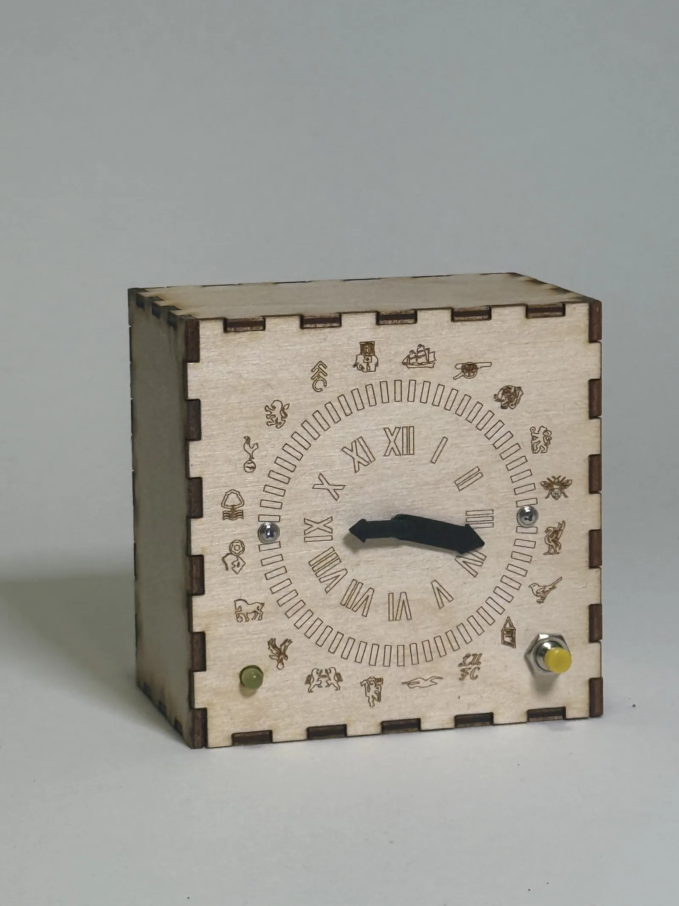
Overview:
Using two servo motors, each with a gear ratio of 1:2, we achieved full 360 degree capability. Like a standard clock, we used a minute and hour hand to point to their respective values. In addition to the time, we added a push button to change the clock’s mode, and tell the user what next Premier League match scheduled is by pointing to the two teams playing.
Photos:
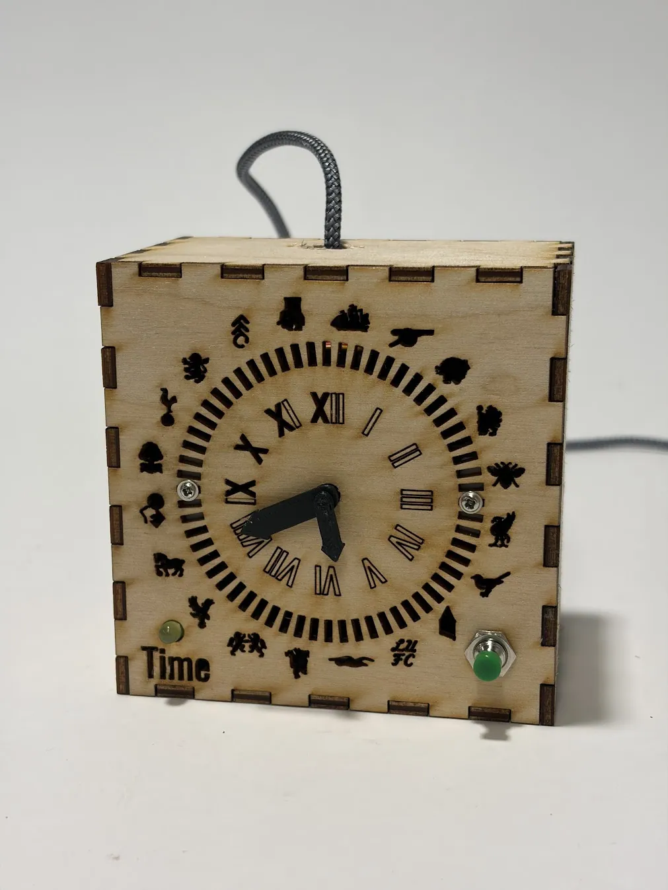
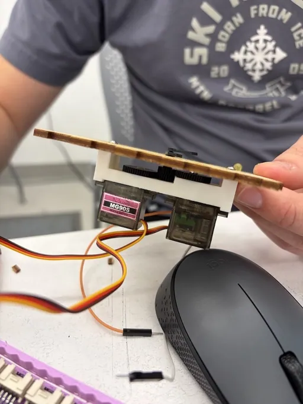
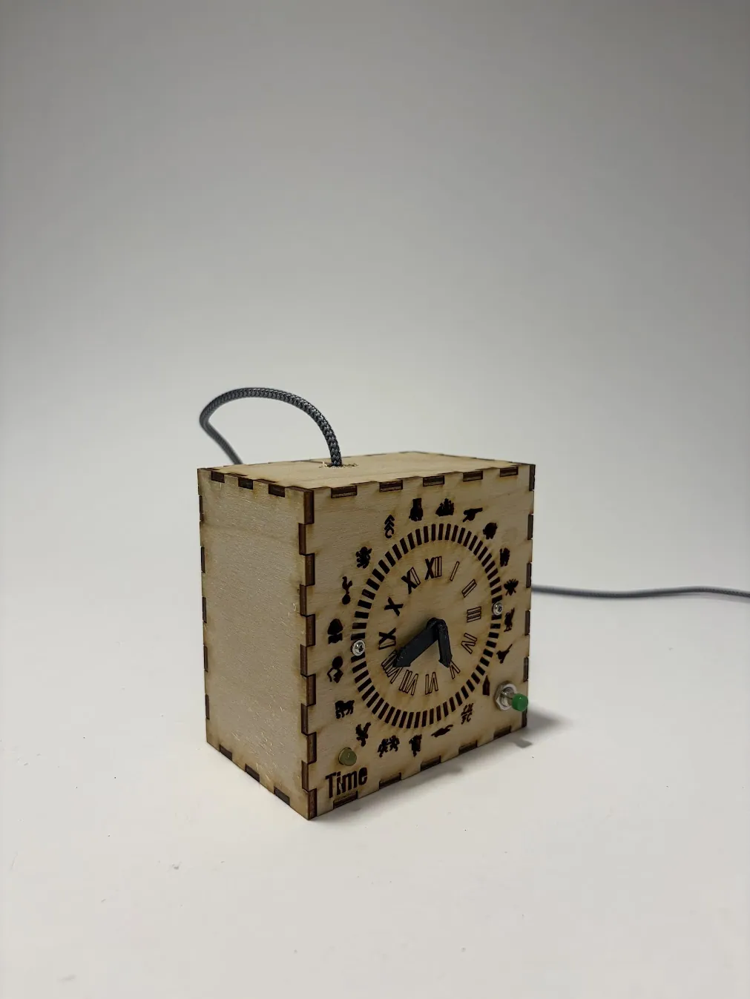
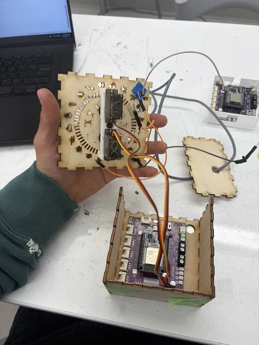
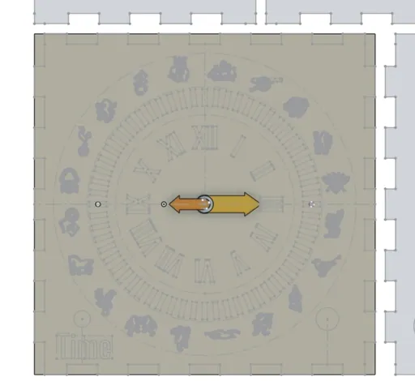
Video Demo:
Approach:
This specific clock design was not our first idea. When brainstorming interesting solutions for this open-ended prompt, we first decided to design and fabricate a linear clock. This clock would work with geared up servo motors moving a belt, which would move the minute and hour hand. Unfortunately, even after multiple iterations, the gearing for the belt drive proved to be complicated for the short deadline.
Linear clock
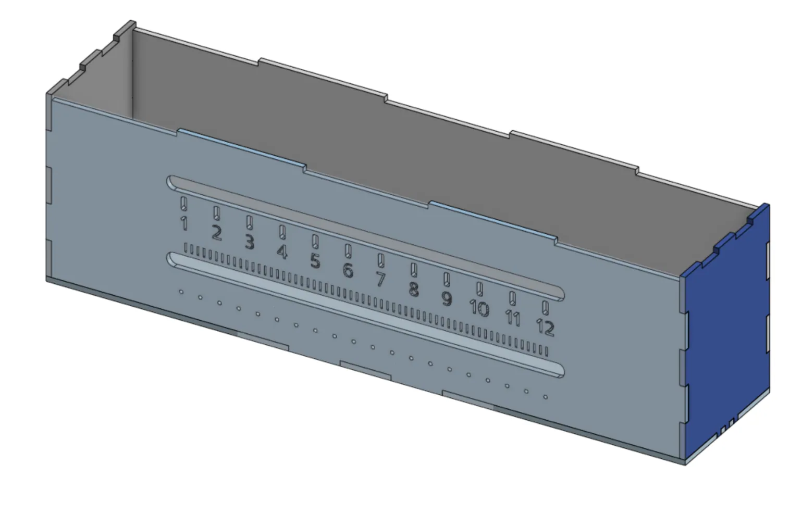
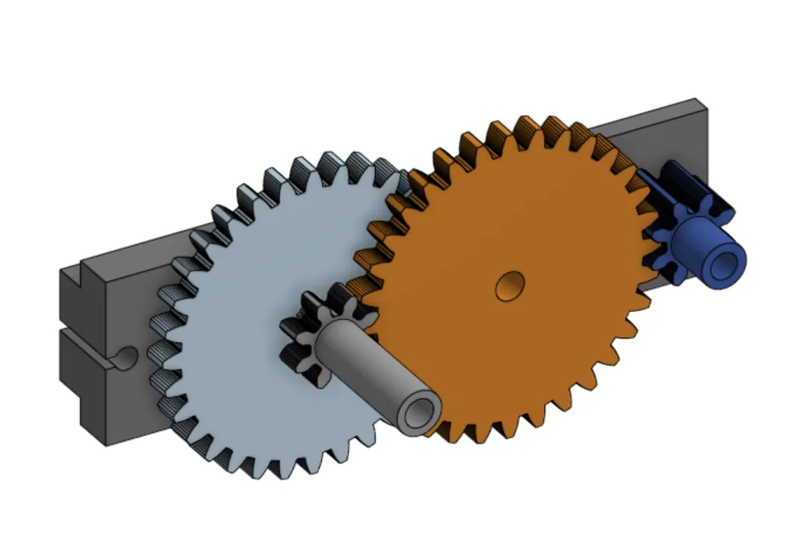
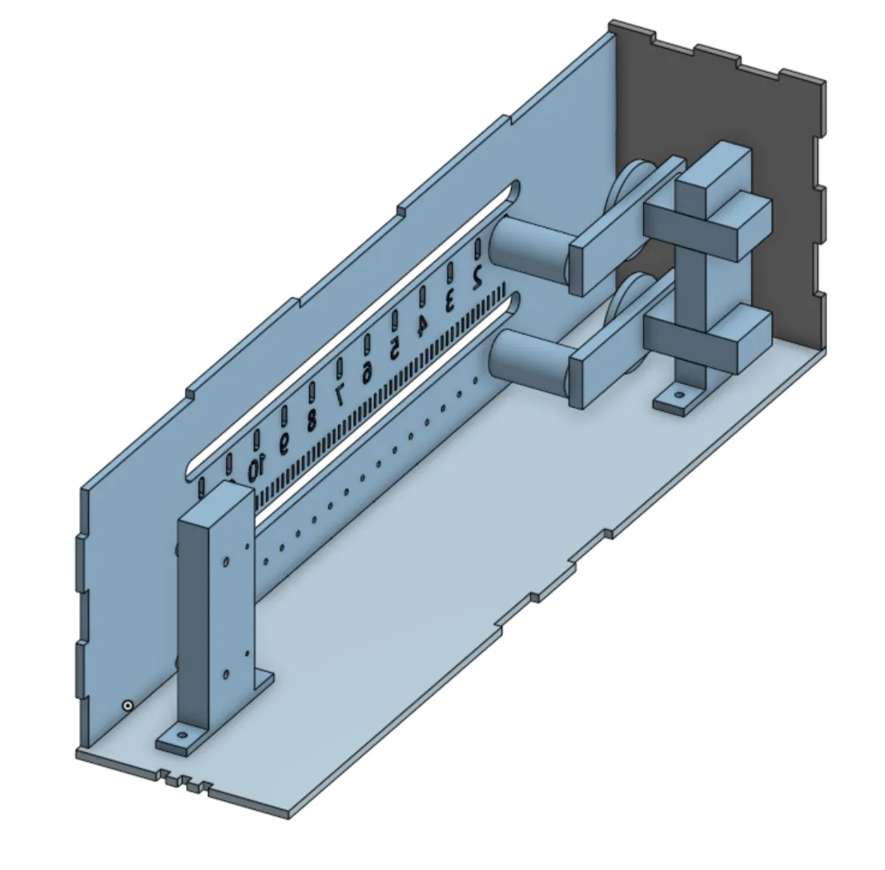
The main issue the linear clock posed was the issue of length of the belt drive and torque. With a longer belt, the servo motors needed to produce more torque to actuate the movement. If we wanted to continue with the linear idea, we would have had to compress the number notches, leaving us with very little amount of error. Because of this, we decided to ditch the belts, and instead pivot to a geared servo that rotated a hand.
Building the clock:
The fabrication of the clock and its logic consisted of three major parts:
- Servo to Minute/hour hand mechanism
- ESP32 Logic + API call infrastructure
- Fabrication of clock shell
Hand Mechanism
The gear mechanism consists of four gears, two 24 tooth and two 48 tooth gears. To get the hour and minute hand in the same axis, the orange gear goes through the sleeve of the blue gear. We encountered multiple challenges such as gear backlash, hour and minute hands slipping, and clearance issues. It took many iterations of trying different tooth quantities and dimensioning.
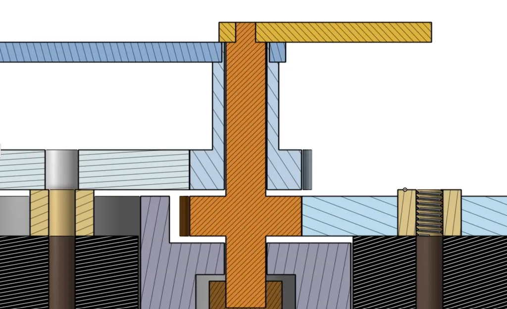
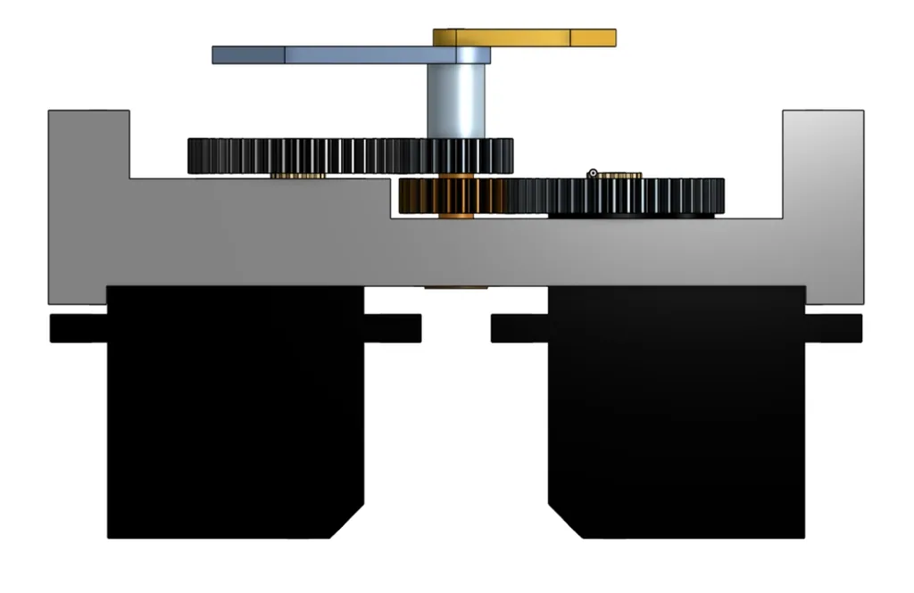
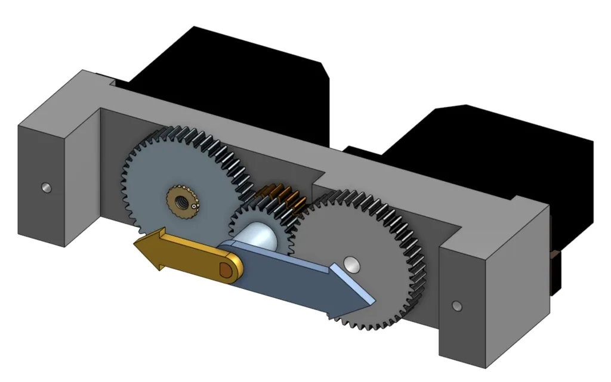
Code
The logic behind the clock utilizes two API calls: TimeAPI.io and api.football-data.org. After the ESP32 connects to the Wi-Fi, it is able to sync the clock’s time. The clock will then do a calibration, the minute and hour hand will point to 12, 3, 6, 9, and then back to 12. This shows the user if the hands are calibrated correctly. After calibration, the hands will go to the current time. When the button is pressed, a button handler in the code will make the match requested flag turn to true. The clock is divided into 20 points for each team. When the match is requested, the two Premier League teams that have the next scheduled match are pointed to be the hour and minute hand. The football API call receives all of the next Premier League matches in the three weeks.
import gc
import time
import secrets
import urequests
from machine import Pin, PWM
# ---------------------------------------------------------------------------
PIN_SERVO_HOUR = 4 # servo driving the hour hand, geared 2:1 for a 360-degree sweep
PIN_SERVO_MINUTE = 5 # servo driving the minute hand, geared 2:1 for a 360-degree sweep
PIN_LED_MODE = 2 # D2 - lights up while showing the PL matchup, off while showing normal time
PIN_BUTTON = 32 # D32 - button that triggers "show next match" mode (D34 has no internal pull-up, don't use it here)
# Pulse width (ns) at each end of the servo's own travel (0-180 degrees on
# the servo itself), which the 2:1 gearing turns into a full 0-360 degree
# sweep of the clock hand. Swap min/max per servo if one runs backwards
# relative to the other.
SERVO_HOUR_MIN_NS = 500_000
SERVO_HOUR_MAX_NS = 2_500_000
# Calibration: degrees added to the commanded angle to correct for how the
# horn/gear landed when it was mounted. Set via calibrate_servos() — command
# fraction 0.0, measure how far off true 12 o'clock the hand sits and which
# way, then adjust this value and re-run calibrate_servos() to confirm. If
# nudging it the "obvious" direction makes it worse, this rig's gearing
# inverts rotation sense, so flip the sign instead.
# Only used for the hour servo - the minute servo's calibration is the
# MINUTE_CALIBRATION table below instead.
SERVO_HOUR_OFFSET_DEG = 315.0
# Calibration: multiplier on the commanded angle to correct a proportional
# under/over-rotation (e.g. the real gear ratio isn't exactly 2:1). Found by
# jogging to a known angle (see ServoTest.py) and comparing to the measured
# result: scale = commanded_degrees / actual_measured_degrees.
# Only used for the hour servo - the minute servo's response turned out to be
# non-linear (see MINUTE_CALIBRATION below), so a single scale number can't
# describe it and it uses a measured table + interpolation instead.
SERVO_HOUR_SCALE = 1
# Calibration table for the minute servo: measured (minute-mark, pulse ns)
# points from raw-pulse probing in ServoTest.py, since it takes progressively
# more ns per minute as the pulse gets longer - not a straight line. The
# floor of this servo's pulse range (~300,000ns) lands at minute 13, not
# minute 0, so minutes 0-13 are unreachable on this lap; they're reached
# instead by continuing a bit past a full turn, which is why the table goes
# up to "minute 75" (= minute 15 of the next lap around). Re-measure and
# update this if the servo/gearing/mounting ever changes.
MINUTE_CALIBRATION = [
(13, 300_000),
(15, 390_000),
(30, 850_000),
(45, 1_450_000),
(60, 2_000_000),
(75, 2_450_000),
]
# If the horn/gear ever slips or gets remounted, the whole table above shifts
# by a fixed amount without changing its shape - correct for that here rather
# than re-measuring everything. In minutes (1 min = 6 degrees). Positive =
# hand was sitting clockwise of target, negative = counter-clockwise.
# e.g. hand sat 90 deg (15 min) counter-clockwise of target -> +15 to correct.
MINUTE_CALIBRATION_SHIFT_MIN = 15
DEBOUNCE_MS = 200
MATCH_DISPLAY_SECONDS = 10 # how long to hold the team positions before returning to clock mode
CLOCK_UPDATE_SECONDS = 10 # how often to nudge the hands while in clock mode
STARTUP_TEST_STEP_SECONDS = 1.5 # pause between each position during the startup hand test
# Premier League clubs in physical clockwise order around the dial, starting
# from the marker nearest 12 o'clock. This is NOT alphabetical - it matches
# how the teams are actually printed on the face. Update this if the face is
# ever redone (e.g. promotions/relegations changing which teams are on it).
PREMIER_LEAGUE_TEAMS = [
"Manchester City", "Arsenal", "Hull City", "Chelsea", "Brentford",
"Liverpool", "Newcastle United", "Everton", "Leeds United", "Brighton & Hove Albion",
"Manchester United", "Sunderland", "Crystal Palace", "Ipswich Town", "AFC Bournemouth",
"Nottingham Forest", "Tottenham Hotspur", "Aston Villa", "Fulham", "Coventry City",
]
# Calibration: degrees added to every team's dial position, to correct for
# how the printed face sits relative to true 12 o'clock (independent of the
# hour/minute servo mounting offsets above - this is about the face artwork,
# shared by both hands since they point at the same team ring). Found the
# same way as the servo offsets: point at team index 0 (first team above),
# measure how far off true 12 it sits and which way, then adjust.
TEAM_DIAL_OFFSET_DEG = 0.0
# ---------------------------------------------------------------------------
# Servos + LEDs
# ---------------------------------------------------------------------------
hour_servo = PWM(Pin(PIN_SERVO_HOUR), freq=50, duty_u16=0)
minute_servo = PWM(Pin(PIN_SERVO_MINUTE), freq=50, duty_u16=0)
led_mode = Pin(PIN_LED_MODE, Pin.OUT, value=0)
def set_mode_led(on):
led_mode.value(1 if on else 0)
def log(msg):
t = time.gmtime(current_time())
print("[{:02d}:{:02d}:{:02d}] {}".format(t[3], t[4], t[5], msg))
def set_position(servo, fraction, min_ns, max_ns, offset_deg, scale, label):
"""Point a geared, 360-degree servo to `fraction` (0.0-1.0) of a full turn,
corrected by `scale` (proportional under/over-rotation) then shifted by
`offset_deg` (to correct for how it was mounted)."""
adjusted = (fraction * scale + offset_deg / 360.0) % 1.0
pulse_ns = int(min_ns + adjusted * (max_ns - min_ns))
servo.duty_ns(pulse_ns)
log(f"{label} servo -> {adjusted * 360:.1f} deg (target {fraction * 360:.1f} deg, scale {scale:.3f}, offset {offset_deg:+.1f})")
def set_hour_position(fraction):
set_position(hour_servo, fraction, SERVO_HOUR_MIN_NS, SERVO_HOUR_MAX_NS, SERVO_HOUR_OFFSET_DEG, SERVO_HOUR_SCALE, label="Hour")
def interpolate_ns(table, x):
"""Piecewise-linear lookup: find where x falls between two calibrated
(x, ns) points and interpolate, instead of assuming one straight line
across the whole range like set_position does."""
for (x0, ns0), (x1, ns1) in zip(table, table[1:]):
if x0 <= x <= x1:
t = (x - x0) / (x1 - x0)
return ns0 + t * (ns1 - ns0)
return table[0][1] if x < table[0][0] else table[-1][1]
def set_minute_position(fraction):
"""Point the minute hand using the measured MINUTE_CALIBRATION table
instead of a straight-line formula. Minutes 0-13 fall below this servo's
real pulse floor, so they're looked up as "minute + 60" instead - reached
by continuing a bit past a full turn rather than a low pulse.
MINUTE_CALIBRATION_SHIFT_MIN corrects for the horn/gear's mounting
position without needing to re-measure the whole table."""
minute = (fraction * 60 + MINUTE_CALIBRATION_SHIFT_MIN) % 60
low_minute = MINUTE_CALIBRATION[0][0]
if minute < low_minute:
minute += 60
pulse_ns = int(interpolate_ns(MINUTE_CALIBRATION, minute))
minute_servo.duty_ns(pulse_ns)
log(f"Minute servo -> target {fraction * 360:.1f} deg ({fraction * 60:.1f} min), pulse {pulse_ns} ns")
# ---------------------------------------------------------------------------
# Wifi / time
# ---------------------------------------------------------------------------
def wifi_connect():
import network
sta_if = network.WLAN(network.WLAN.IF_STA)
sta_if.active(False)
time.sleep(1)
sta_if.active(True)
time.sleep(1)
try:
sta_if.disconnect()
except OSError:
pass
time.sleep(0.5)
if not sta_if.isconnected():
print('connecting to network...')
sta_if.connect(secrets.SSID, secrets.PWD)
while not sta_if.isconnected():
pass
print('network config:', sta_if.ipconfig('addr4'))
def get_utc_now(max_retries=3):
"""Fetch current local (America/New_York) time from TimeAPI.io. Returns an epoch-like value or None."""
url = "https://timeapi.io/api/time/current/zone?timeZone=America/New_York"
for attempt in range(1, max_retries + 1):
try:
response = urequests.get(url)
if response.status_code == 200:
data = response.json()
response.close()
t = time.mktime((
data['year'], data['month'], data['day'],
data['hour'], data['minute'], data['seconds'],
0, 0
))
print("Time synced from TimeAPI.io:", data['dateTime'])
return t
else:
print(f"TimeAPI attempt {attempt} bad status: {response.status_code}")
response.close()
except OSError as e:
print(f"TimeAPI attempt {attempt} failed: {e}")
time.sleep(2)
print("TimeAPI.io failed after retries — using unsynced clock")
return None
def format_date(t):
return "{:04d}-{:02d}-{:02d}".format(t[0], t[1], t[2])
# ---------------------------------------------------------------------------
# Football API
# ---------------------------------------------------------------------------
def get_next_match(now_ts):
"""Return (home_name, away_name) for the next scheduled PL match, or None."""
one_week_later = now_ts + (21 * 24 * 60 * 60)
date_from = format_date(time.gmtime(now_ts))
date_to = format_date(time.gmtime(one_week_later))
url = f"https://api.football-data.org/v4/competitions/PL/matches?status=SCHEDULED&dateFrom={date_from}&dateTo={date_to}"
headers = {'X-Auth-Token': secrets.FOOTBALL_API_TOKEN}
try:
response = urequests.get(url, headers=headers)
except OSError as e:
print("Match request failed:", e)
return None
if response.status_code != 200:
print(f"Error: {response.status_code}")
print(response.text)
response.close()
return None
data = response.json()
matches = data['matches']
response.close()
if not matches:
print("No scheduled matches in the next week.")
return None
next_match = matches[0]
home = next_match['homeTeam']['name']
away = next_match['awayTeam']['name']
print(f"Next PL match: {home} vs {away} at {next_match['utcDate']} UTC")
return home, away
def normalize_team(name):
name = name.lower().replace("&", "and")
for suffix in (" fc", " afc"):
if name.endswith(suffix):
name = name[: -len(suffix)]
return name.strip()
def team_fraction(team_name):
"""Map a team name to its 0.0-1.0 position around the dial (physical clockwise order).
Divides by len(teams), not len(teams) - 1: this is a circular dial, so
fraction 0.0 and 1.0 are the same physical spot. Dividing by the count
(not count - 1) spaces all 20 teams evenly around the full circle without
the first and last team landing on top of each other. TEAM_DIAL_OFFSET_DEG
then shifts the whole ring to match where it actually sits on the face.
"""
target = normalize_team(team_name)
for i, name in enumerate(PREMIER_LEAGUE_TEAMS):
known = normalize_team(name)
if known == target or known in target or target in known:
return (i / len(PREMIER_LEAGUE_TEAMS) + TEAM_DIAL_OFFSET_DEG / 360.0) % 1.0
print("Unknown team, not in PREMIER_LEAGUE_TEAMS list:", team_name)
return 0.5 # park in the middle if we don't recognize the name
def show_next_match(now_ts):
"""Hour hand points at the home team, minute hand points at the away team."""
result = get_next_match(now_ts)
if result is None:
return
home, away = result
log(f"Button pressed -> showing matchup: {home} (hour hand) vs {away} (minute hand)")
set_mode_led(True)
set_hour_position(team_fraction(home))
set_minute_position(team_fraction(away))
time.sleep(MATCH_DISPLAY_SECONDS)
set_mode_led(False)
log("Matchup display done -> returning to clock")
# ---------------------------------------------------------------------------
# Button (ISR sets a flag, main loop does the actual work)
# ---------------------------------------------------------------------------
button = Pin(PIN_BUTTON, Pin.IN, Pin.PULL_UP)
last_press = 0
match_requested = False
def button_handler(pin):
global last_press, match_requested
now = time.ticks_ms()
if time.ticks_diff(now, last_press) > DEBOUNCE_MS and pin.value() == 0:
last_press = now
match_requested = True
button.irq(trigger=Pin.IRQ_FALLING, handler=button_handler)
# ---------------------------------------------------------------------------
# Clock mode - normal two-hand clock
# ---------------------------------------------------------------------------
def show_clock(utc_ts):
t = time.gmtime(utc_ts) # (year, month, mday, hour, minute, second, ...)
hour, minute = t[3], t[4]
hour_fraction = ((hour % 12) + minute / 60) / 12
minute_fraction = minute / 60
log("Clock update -> {:d}:{:02d}".format(hour % 12 or 12, minute))
set_hour_position(hour_fraction)
set_minute_position(minute_fraction)
def test_clock_hands():
"""One-time startup sanity check: sweep each hand through a few known positions.
Uses a continuously increasing fraction (0.0 -> 1.0) rather than wrapping
back to 0.0 for the final "12"/"60" mark. Fraction 0.0 and 1.0 land on the
same visual spot but are different physical servo angles (0 deg vs 180 deg,
since it's geared 2:1) - commanding 0.0 from mid-swing would yank the
servo all the way backward instead of finishing the turn forward.
"""
log("Startup test: sweeping hour hand through 12, 3, 6, 9, 12")
for label, fraction in (("12", 0.0), ("3", 0.25), ("6", 0.5), ("9", 0.75), ("12", 1.0)):
log(f"Hour hand target: {label} o'clock")
set_hour_position(fraction)
time.sleep(STARTUP_TEST_STEP_SECONDS)
log("Startup test: sweeping minute hand through 15, 30, 45, 60")
for label, fraction in (("15", 0.25), ("30", 0.5), ("45", 0.75), ("60", 1.0)):
log(f"Minute hand target: {label}")
set_minute_position(fraction)
time.sleep(STARTUP_TEST_STEP_SECONDS)
log("Startup test complete")
def calibrate_servos():
"""Park both hands at fraction 0.0 (should be true 12 o'clock) and hold,
so you can measure how far off each one physically sits.
Usage: temporarily call this instead of test_clock_hands() in Main below,
flash it, then measure each hand against the 12 o'clock mark:
- How many degrees off is it, and which way (clockwise/counter-clockwise)?
Report those two numbers and I'll set SERVO_HOUR_OFFSET_DEG (for the hour
hand) or the first MINUTE_CALIBRATION point (for the minute hand). Ctrl+C
out of this once you've measured.
"""
log("CALIBRATION: parking hour + minute hands at fraction 0.0 (true 12 o'clock)")
set_hour_position(0.0)
set_minute_position(0.0)
log("Hands parked - measure the offset on each, then Ctrl+C and report back")
while True:
time.sleep(1)
def probe_servo_range(servo, label, start_ns=300_000, end_ns=2_700_000, step_ns=100_000, step_seconds=1.0):
"""Sweep raw pulse widths on one servo, ignoring fraction/offset math, so
you can find where it actually stalls/buzzes at each end.
Usage: temporarily call e.g. probe_servo_range(hour_servo, "Hour") instead
of test_clock_hands() in Main below. Watch/listen for the pulse width
where it stops moving cleanly (grinds, buzzes, or the hand just stops).
Report the ns value at each end and I'll set SERVO_HOUR_MIN_NS/MAX_NS (or
the minute equivalents) a little inside those limits, so the fraction
math never asks for a pulse the servo can't actually reach.
"""
ns = start_ns
while ns <= end_ns:
servo.duty_ns(ns)
log(f"{label} raw pulse -> {ns} ns")
time.sleep(step_seconds)
ns += step_ns
def wait_or_button(seconds):
"""Sleep up to `seconds`, but return early the moment the button sets
match_requested - so a press is noticed within ~50ms instead of waiting
out the rest of a long clock-update sleep."""
end = time.ticks_add(time.ticks_ms(), int(seconds * 1000))
while time.ticks_diff(end, time.ticks_ms()) > 0:
if match_requested:
return
time.sleep_ms(50)
# ---------------------------------------------------------------------------
# Main
# ---------------------------------------------------------------------------
print(time.gmtime())
wifi_connect()
now_ts = get_utc_now()
if now_ts is None:
now_ts = time.time() # fallback to board's own clock
sync_ticks = time.ticks_ms()
def current_time():
return now_ts + time.ticks_diff(time.ticks_ms(), sync_ticks) // 1000
gc.collect()
test_clock_hands()
#calibrate_servos()
while True:
if match_requested:
match_requested = False
show_next_match(current_time())
else:
show_clock(current_time())
wait_or_button(CLOCK_UPDATE_SECONDS)
Clock Fabrication
We found a graphic of all 20 Premier League teams (2026/27 season) and converted the image into a .dxf file. We lasercutted a simple box to hold all of our components. simple box to hold all of our components.
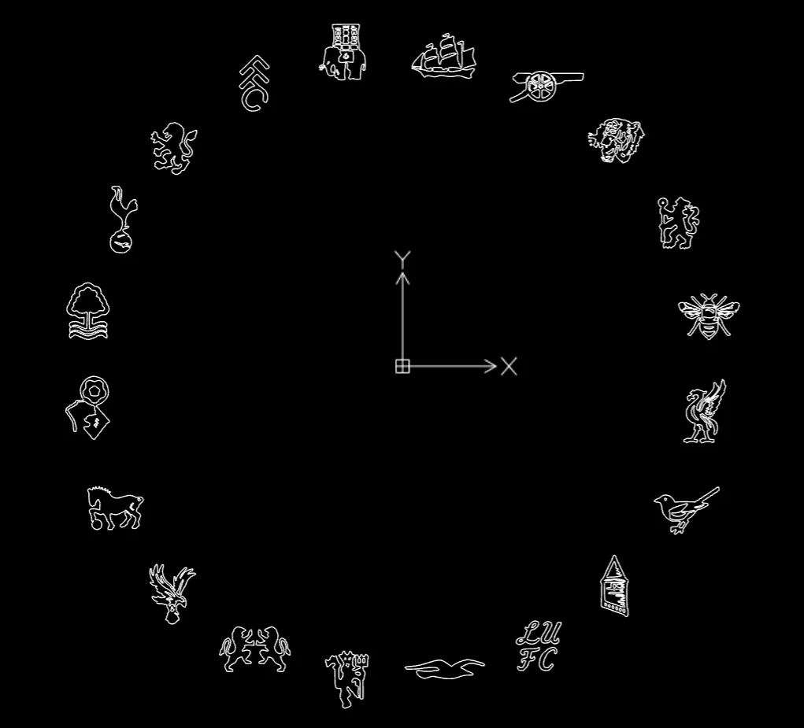
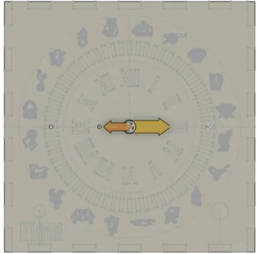
Wiring Diagram:
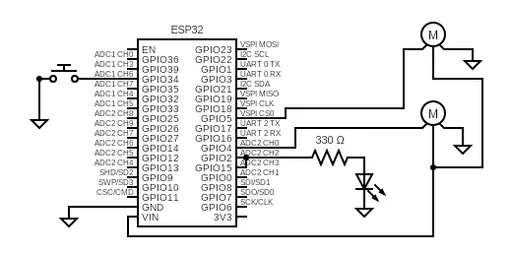
Challenges and Outcome
After finalizing our idea of what kind of clock we were going to create, our biggest challenge we faced was with the gearing and calibration. The first set of gears we printed out did not have enough teeth, and caused a lot of backlash, disallowing the servos to smoothly move the hands. Because of this backlash, precise motions were impossible, and the reading on the clock would be inaccurate. Therefore, we printed a bigger motor mount to account for new gears that had much more teeth. This addition of teeth made the connection between the servo and hand very smooth. Calibrating the clock was another issue, however, as we had to pulse the servo motors manually to set where the hands pointed. This was necessary because of the added gears, the servos were no longer able to tell were they were. To calibrate the clock, we set 6 known positions with their corresponding nanosecond pulse. With this data, we could then interpolate and use to make very precise movements.
Originally written in Notion.